背景の.avatarファイルをiOSアプリのAnimaze Avatarに送信する方法（WindowsにおいてAnimazeエディターを経由）
.avatarファイル形式は、3D/2Dアバター、小道具、背景など、複数の種類のアバターを保管するコンテナの役割を果たします。
.avatarファイルをAnimazeエディターからモバイルデバイスに送信するためには、アーティストパスのサブスクリプションが必要です。設定 > Animazeエディター > エディターに接続 > 接続から、iOSモバイルアプリでアーティストパスを購入してください
アーティストパスを手に入れたら、開始準備完了です！
- まずは、iPhoneとコンピューターが同じローカルエリアネットワーク内にあることを確認します（同じLAN/WiFi）。
-
Animazeエディターの右上端にある「接続」ボタンをクリックして、接続します
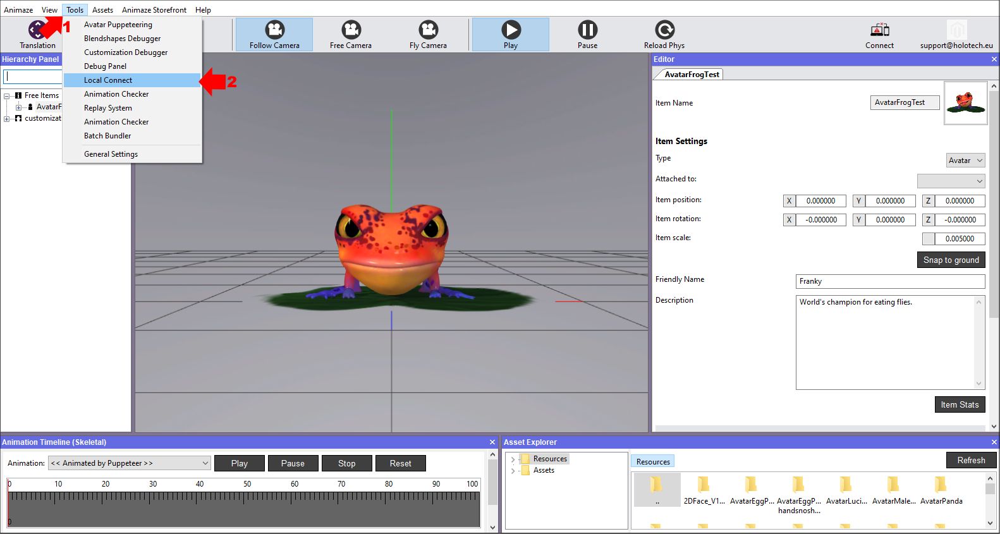
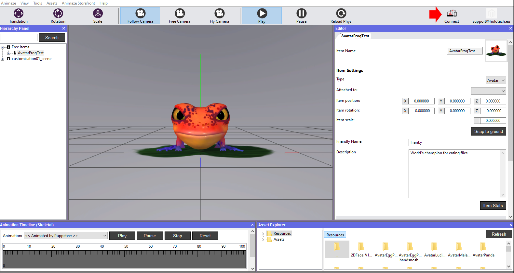
-
Animazeコネクトのウィンドウが表示されます。「開始」ボタンをクリックすると、QRコードが表示されます
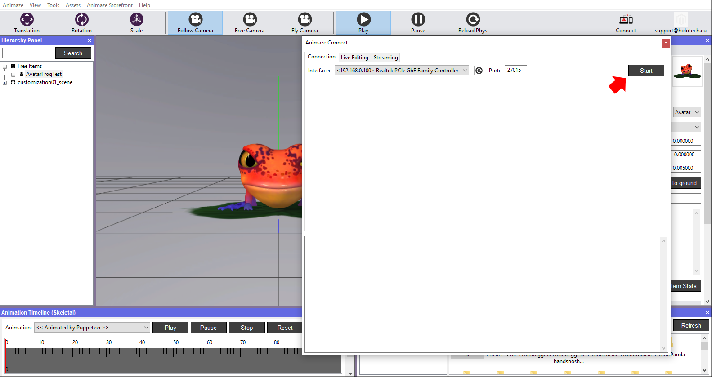
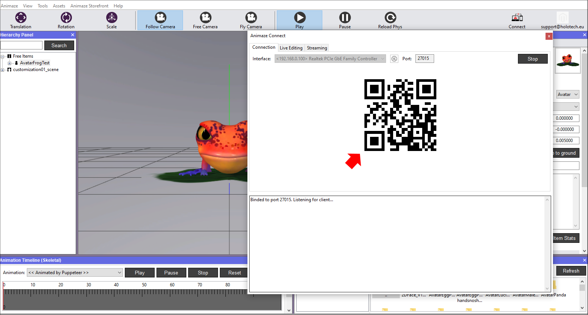
-
モバイルデバイスでAnimaze Avatarのアプリケーションを開きます。メイン画面の右上端にある設定の歯車をクリックします
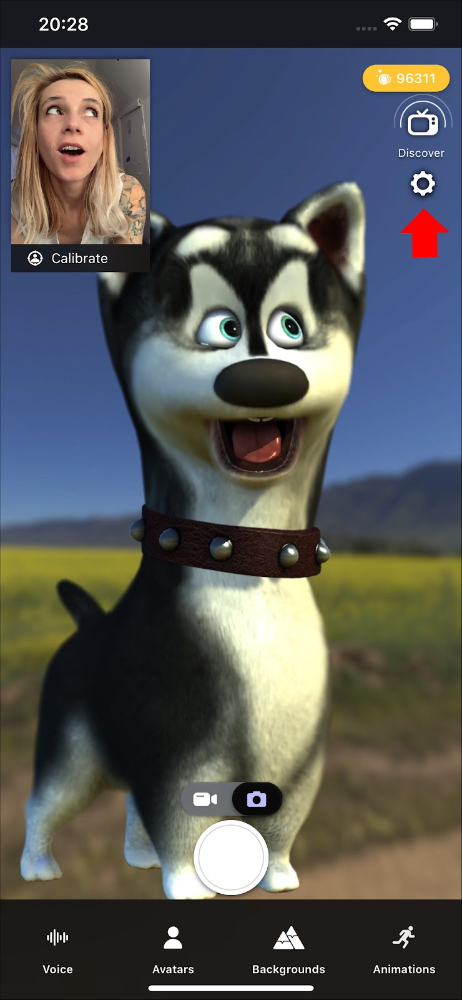
-
Animazeエディターまでスクロールダウンして、「接続」をクリックします
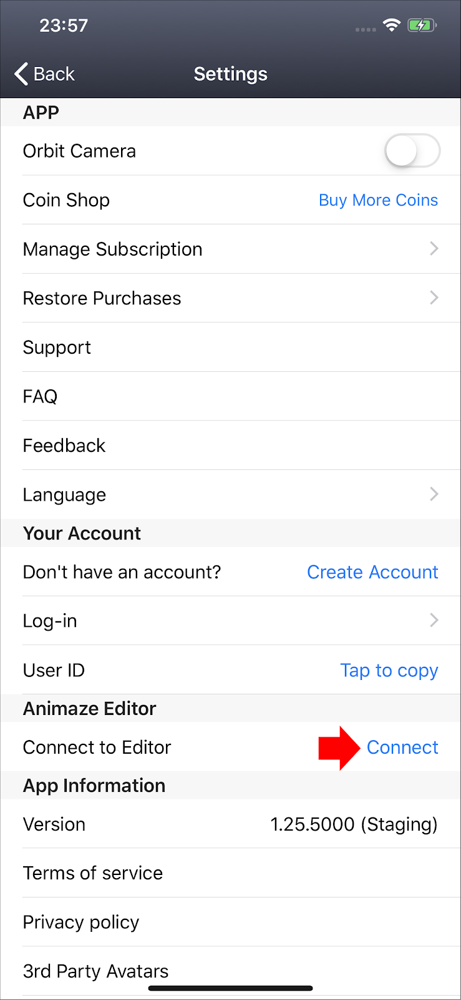
-
背面カメラが開きますので、QRコードに合わせてスキャンします
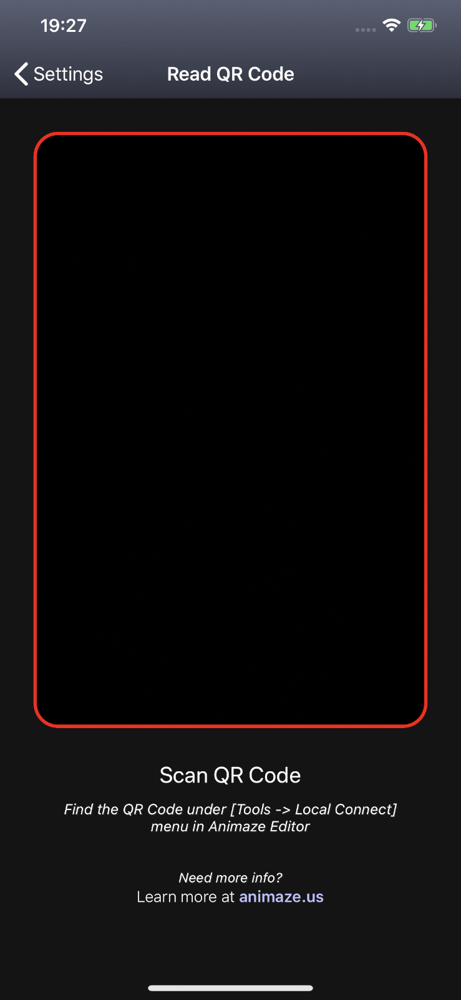
-
スマホのアプリ（左側の画像）とAnimazeエディター（右側の画像）で接続の確認が行われます。
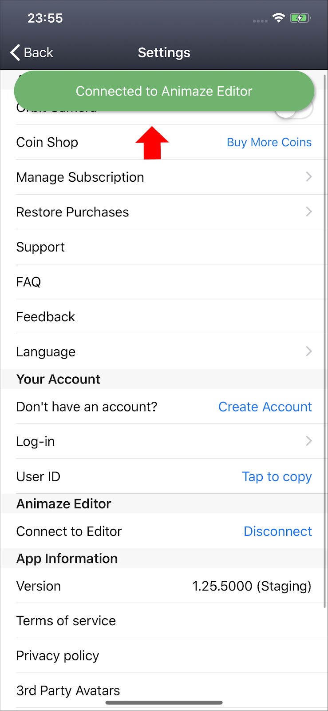
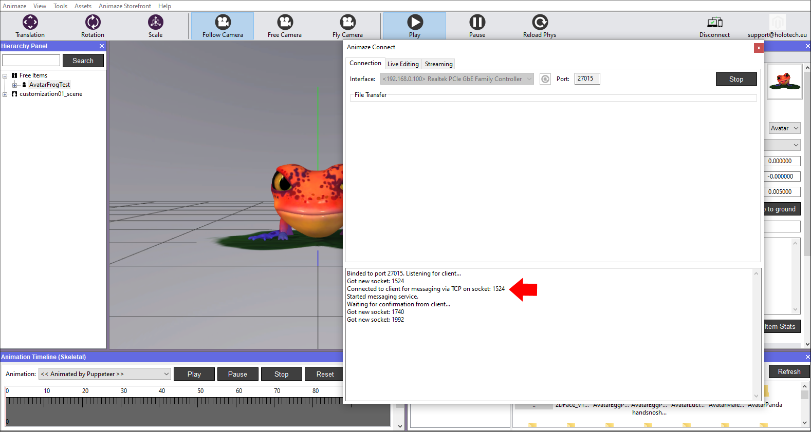
デバイスを接続したら、次の手順ではアバターをモバイルデバイスに送信します：
8. 「階層パネル」へ移動して、背景を右クリックし、「デバイスに送信」を選択します。これにより、シーンがデバイスに送信され、*.avatarファイル形式でバンドル化されます。
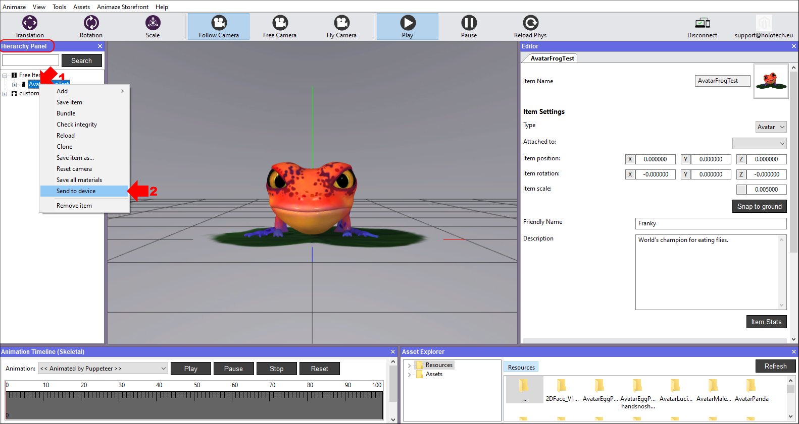
-
モバイルデバイスにファイル転送の承認を求めるポップアップが表示されます
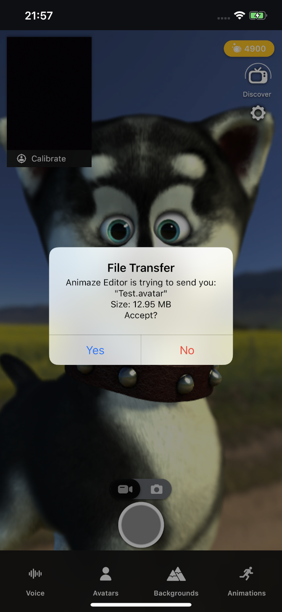
-
承認したら、転送状態の承認メッセージが両方のデバイスに表示されます
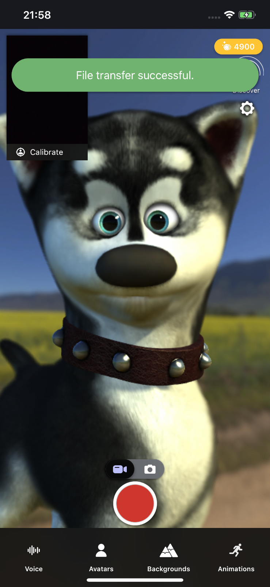
-
アプリで背景ギャラリーを開き、送信した砂漠の背景を見つけて、緑色のチェックマークを押します。
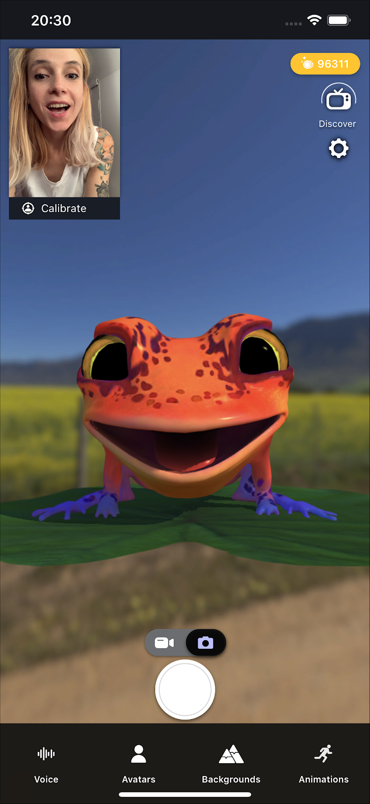